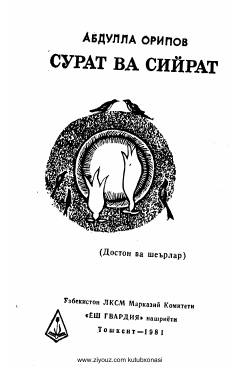

SVAbdulla Oripovning mashhur she'rlari va «Hakim va ajal» dostoni jamlangan to'plam.
Ushbu to'plam mashhur o'zbek shoiri Abdulla Oripovning turli yillarda yozilgan sara she'rlari hamda Abu Ali ibn Sino hayotiga bag'ishlangan «Hakim va ajal» dostonini o'z ichiga oladi. Kitobda yangi asarlar bilan birga muallifning avvalgi to'plamlariga kirmagan ba'zi she'rlari ham o'rin olgan.